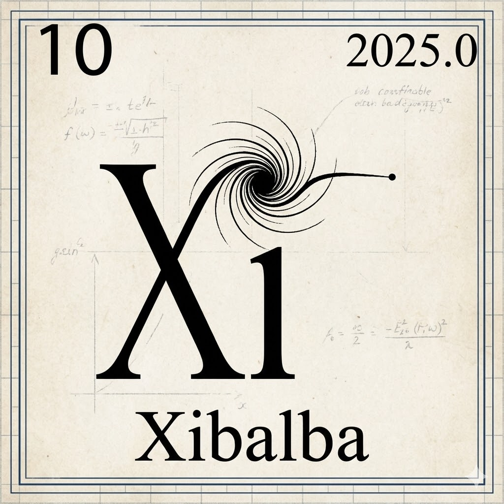

High-fidelity autonomous agents. Zero compromise on security.
In the Maya underworld of Xibalba, secrets were buried deep. We bring that same level of impenetrability to your digital infrastructure.
The modern AI landscape is dominated by cloud giants who treat your data as fuel for their models. We believe in a different path: **Sovereign Intelligence**. Your models, your data, and your hardware, working together in a secure, local environment.
Xibalba Solutions exists to bridge the gap between cutting-edge Artificial Intelligence and absolute data privacy.

Founder & Lead Design Engineer
Jacob Vickers, Founder and Lead Design Engineer of Xibalba Solutions, brings a rigorous analytical approach to high-assurance technology. With a background in applied mathematics and physics, he leads the development of autonomous agentic ecosystems and localized AI infrastructure.
His work focuses on establishing new benchmarks for privacy, security, and performance in decentralized intelligence, ensuring that mission-critical data remains under client control.